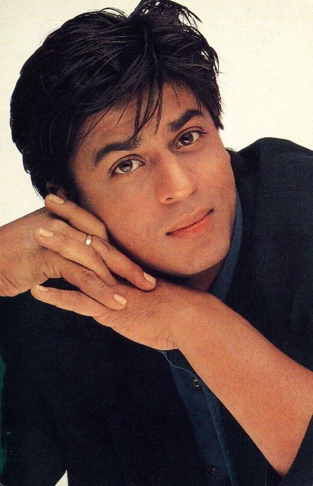

Shahrukh Khan: The King of Bollywood

"I'm like a handsome prince, but without any kingdom."
KING KHAN
Shah Rukh Khan, also known as SRK, is an Indian film actor, producer, and television personality. He has appeared in more than 80 Bollywood films and has a massive fan following worldwide.
A Stellar Career
Shahrukh Khan, often referred to as SRK, is one of the most successful and influential actors in Indian cinema. With a career spanning over three decades, he has starred in more than 80 Bollywood films, earning numerous accolades and a massive global fanbase.
About Khan's Family
- Married to Gauri Chibber.
- Father of Three(Aryan, Suhana, Abram).
- Lives in Mannat.
What We Admire
SRK is not just a talented actor, but also a charismatic personality who has won hearts worldwide. Here's what makes him special:
- His versatility as an actor, excelling in romantic, comedic, and dramatic roles
- His wit and charm, both on and off-screen
- His dedication to his craft and continuous evolution as an artist
- His philanthropic efforts and commitment to social causes
Iconic Films
Some of Shahrukh Khan's most beloved movies include:
- Dilwale Dulhania Le Jayenge (1995)
- Kuch Kuch Hota Hai (1998)
- Kal Ho Na Ho(2003)
- Veer Zaara(2004)
- Chak De! India (2007)
- My Name Is Khan (2010)
Dialogues that reside in our Hearts
- “Bade bade deshon mein aisi choti choti baatein hoti rehti hain, Senorita.” - Dilwale Dulhania Le Jayenge
- “Itni shiddat se maine tumhe paane ki koshish ki hai, ki har zarre ne mujhe tumse milane ki saazish ki hai.” - Om Shanti Om
- “Mohabbat bhi zindagi ki tarah hoti hai. Har mod aasan nahi hota, har mod par khushi nahi hoti. Par jab hum zindagi ka saath nahi chodte, toh mohabbat ka saath kyun chode?” - Mohabbatein
“Sachi mohabbat zindagi mein sirf ek baar hoti hai … aur jab hoti hai … toh koi bhagwan yah khuda usse nakamyab nahi hone deta.”